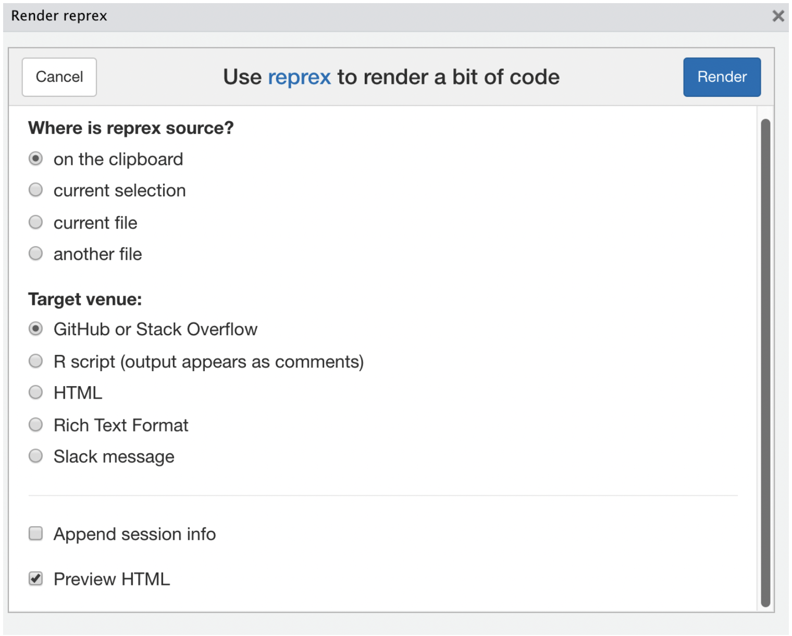
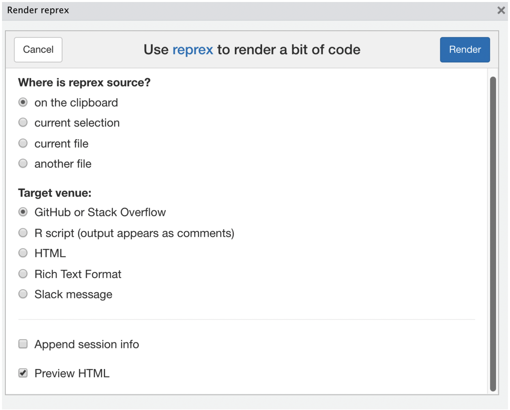
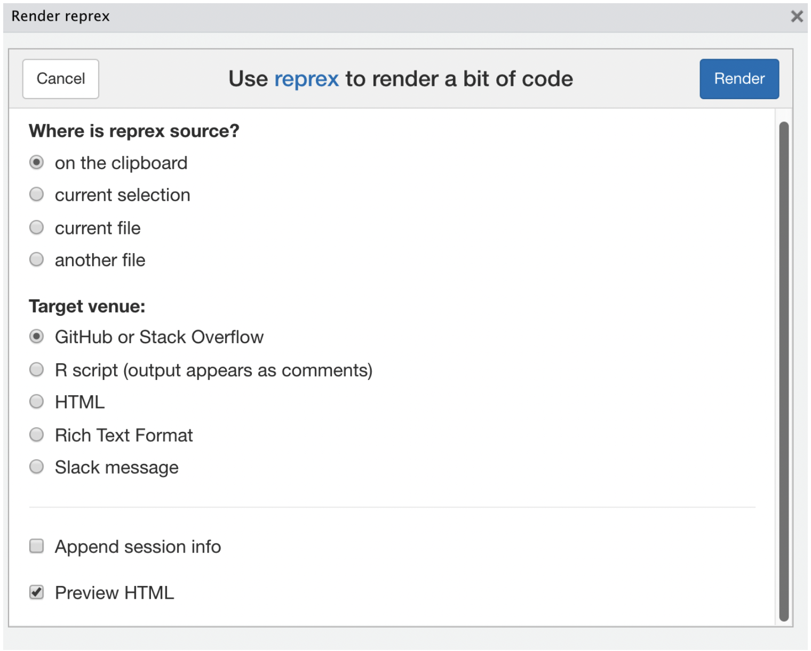

With coding comes bugs and errors that need troubleshooting. In this chapter, you will learn how to decipher errors, find help for fixing them, and practice asking clear questions with minimally reproducible examples.
What are error messages?
Eek! There’s a bug in my code and it’s causing lots of scary red errors!
Don’t panic - believe it or not, this error is just trying to help you! It also may have just saved you from invalid results that you may not have have noticed.
Errors can be frustrating, essentially you’ve just asked the computer to do something and it has said no!
There are a few troubleshooting techniques that we can use to find the source of the error, modify your code, and get the results you’re looking for.
Read the error
The first step is to carefully read the error message, it often contains clues into where and why the code didn’t run. With some time and experience, you’ll begin to identify these errors and fix your code quickly based on the message alone!
Let’s have a look at some common error messages
Oh no! An error message: “Error: object ‘palmerpenguins’ not found”!
When you see the error message “Error: object ‘_____’ not found”, it usually means there is a typo or the object wasn’t loaded in correctly. In this instance, we haven’t used the correct object. Let’s look at how we can fix this.
Typos are a common error, whether it’s in the object name or the function name. In this example, we accidentally used the package name, instead of the name of the data from within the package. When you see the error message “Error: object ‘_____’ not found”, please check and make sure that everything is inputted correctly and the relevant packages are loaded in.
What if we cannot find the function?!
Oh no, we could not find the function of glimpse()! We’ve checked the spelling, so what could be the problem now?
When you see the error message “Error: could not find function”_____”, it usually means the required package hasn’t been loaded into environment.
Let’s try add in the required package dplyr
Sometimes, reading the error message can be a bit tricky. If you’re not sure what the error message is trying to tell you, don’t worry! We’ll cover some other strategies.
Search the message 🔎
Often, error messages can be confusing, and even after carefully reading the message it may be difficult to ascertain what the problem is.
Chances are you’re not the first person to encounter this problem and there’s a well explained solution waiting for you on the internet - you just need to find it.
Take this notoriously confusing error for example. In this code, I want to see the first few values of my sample object. Try running the code below:
“Error: object of type ‘closure’ is not subsettable”
What is a ‘closure’? Why can’t I subset my data with x[1:3]?
When confronted with an error you’ve never seen, and don’t understand - search the web! Just copy the error exactly, “object of type ‘closure’ is not subsettable”, add some relevant keywords like “R” and search!
With some luck, you’ll be met with a series of StackOverflow threads, blog posts and other websites explaining the solution to the exact problem you’re facing. Here’s my top 3 search results:
1. Add double quotes around the error message. This searches for those exact words in that exact order.
2. For long error messages, just search for the unique sounding parts (don’t include parts specific to your code, like a variable name)
3. Add keywords to describe your code’s language, like ‘R’.
4. If you’re looking for solutions on a specific website, add site:<domain> to the search. For example, site:stackoverflow.com.
Divide and conquer 💪
If you understand the message, but have no idea where the problem stems from - try running smaller sections of your code to see if that small section causes the error. Once you identify the small section of code causing the error, it should be slightly easier to find the issue in your code.
Running into this issue often?
If you frequently use this strategy, it may indicate a code styling issue. Consider breaking your code into smaller pieces instead of trying to do everything in one line. For tips on good coding practices, see Jenny Bryan’s presentation ’Code Smells and Feels.
Turn it off and on again 🔄
The age old classic (but sometimes it really does work!).
In R, you don’t necessarily need to restart your whole computer, but instead you can try restarting RStudio, or your R session. Usually I would restart R, which can be done in RStudio
There are a few reasons why this can work. It allows you to re-run your code from a clean slate, with no extra packages loaded that you haven’t asked for and no extra objects in your environment.
Asking for help
Once you’ve carefully read the error, searched the web, and tried everything else you can think of, it’s time to ask for help. However for a stranger to take time out of their day to find the solution and write a good answer for you, you better have written a good question for them!
Read ahead to find out why this is an example of a bad question.
Good Questions
A good question consists of a clear and concise description of your problem, and a small example that can be used to reproduce the issue.
Describe the problem
A good description provides some context to your question. When writing your question, think about what you are trying to achieve.
Instead of writing generic phrases like “it doesn’t work” or “it shows errors,” provide more detailed information about your issue.
Clearly state your goal and the expected output.
Include the exact wording of any error messages you receive.
Use a descriptive title that summarises your problem succinctly.
Provide a minimal reproducible example
A minimal reproducible example is the smallest amount of code that still produces the error. This step is so important that we’ve dedicated an entire section to writing good examples. An example allows the person helping you to quickly understand the issue you are facing, and make changes directly to your example to demonstrate the solution.
The process of creating an example, and reducing it down into the minimal amount of code you can to produce the error, often results in you finding the solution yourself.
This is a platform where you can search for solutions and ask for help. Before asking a question on Stack Overflow, you can search some key words from your understanding of error messages. It is likely that people have already asked similar questions related to your error and you can try the solutions provided by others under the question.
If you’ve thoroughly investigated your error and believe the issue lies in the package rather than your code, you can contact the package’s developer. Most R packages are open-source and maintained on Github.
1. Search for the package’s repository using its name along with “R” and “GitHub”.
2. Use the “Issues” tab to report your problem.
3. Make sure to check if the issue has already been reported before creating a new one.
If you’re preparing for your Monash University course, a good place to ask for help is the discussion forum on Moodle. You can also seek assistance from your lecturers and tutors.
If your unit uses Ed as a discussion space, use it to ask or answer questions. Some units may even allow you to post privately or anonymously if you feel shy posting publicly.
Trusty (sometimes) AI.
There are many AI tools that can help you write code, and some can even help you debug it. However, AI should be used with caution. While it can assist in troubleshooting errors, it may not always provide the best solution. You should still try to understand what the code is doing and why it’s causing an error to avoid using code from AI which may be producing inaccurate results (despite running without error).
Teachers and Tutors in Consultations.
Ask your lecturers and tutors for help during consultation sessions, which are available for any content-related difficulties, including debugging code.
Prepare a small demonstration of your error beforehand to make the session more effective.
The benefit of these sessions is that we can guide you closer to the solution until you figure it out yourself.
Don’t be disheartened if your error, which you’ve struggled with for hours, is solved in minutes — we’ve had plenty of practice (also being stuck for hours) troubleshooting these errors.
Help and Learn
Answering questions on the forum can help consolidate your understanding and prepare you for asking and answering questions in other forums such as Stack Overflow.
Minimal Reproducible Examples
Remember
A minimally reproducible example (often called an MRE) contains all of the code necessary for someone else to encounter the same error you’re facing.
To create one, you need to provide the exact packages you’re using, some data if needed, and your code. A good example is also minimal, which means that you’ve taken the time to remove as much unrelated packages, code and data as possible to produce the error.
Providing minimal datasets
If your question involves using a dataset, you will need to provide a small dataset to demonstrate the problem. Often people say that the data is confidential and can’t be provided, but usually the problem isn’t specific to the data you are using. Taking the time to try your code on a different dataset is a good debugging step, and R provides many good datasets to use in these examples built in. You can find a complete list of datasets available to all R users with the data(package = "datasets") function.
If you do need to use a custom dataset specific to your project, try reducing the size of the dataset before making your example. The error may only occur for some specific rows of your data. Once you’ve narrowed in on the issue, you can convert your minimal data object to code for producing it using the dput() function.
For example you can use use the below code to provide the first 6 rows of the iris dataset.
Try it yourself! Create a minimal dataset using the dput() function for the penguins dataset.
Hint
We want to be putting the penguins data to create a minimal dataset.
You can then copy this generated code, and make it part of your example to create your example data.
Alternatively you can save this minimal dataset to a file, and attach the file in your question.
When you read that file in, make sure you avoid absolute paths to it. Not everyone has the same file structure as you, so they won’t be able to access your dataset if it is stored at /home/learnr/Documents/My Job/project_2040/data/housing_prices.csv. Instead provide a short relative oath, such as housing_prices.csv or data/housing_prices.csv. If you’re uploading files, it’s also nice to provide a zip that contains a R script of your minimal reproducible code, along with the data in the folders referenced by the script.
– potentially a multiple choice question here on relative paths? —
Create minimal reproducible examples
As part of a data analysis you probably write a lot of code. You need to read in the data, tidy it up, run some calculations and make some plots. When you run into an error, providing your entire analysis just makes it more time consuming for helpers to run your code and identify the source of the error.
A minimal reproducible example cuts out as much of the code as possible, keeping just a few essential lines for producing the error. If your error comes after the data cleaning, remove that code and start with a clean, minimal dataset.
If your code includes any randomisation, it’s a good idea to set the random seed using the set.seed() function. This ensures that each time the code is ran, the same random results are obtained.
Reproducing random results
The set.seed() function in R ensures reproducible results in code involving random values. It guarantees the same random values are produced each time you run the code, aiding in debugging and consistency. The number in the brackets can be any integer.
The process of cleaning up your code and reducing it down into a small example is another great exercise that often helps you identify the problem and fix it yourself.
Remember, you need to provide all code necessary to load in packages you use, read in data and run functions that cause the error.
Provide session information
Sometimes the error is specific to the version of R, or the packages you are using. To help others help you, you can provide the session information using the sessioninfo::sessionInfo() function. This will print out the version of R you are using, and the versions of the packages you have loaded, which makes it easier to fix some version, language or OS specific problems. A good reproducible example should come with this session information output.
Using the reprex package for producing examples
the reprex package is a useful tool that can help you make a reproducible example. It can be used to run the code in your example in a clean environment, which is a good way to test if you’ve included everything necessary for others to reproduce the error. It’ll also copy a neatly formatted version of your example which will also display in your Viewer window and includes images and console output from the example as it runs on your computer. It can even include a collapsible summary of your session information.
To use reprex:
Install it from CRAN using install.packages("reprex").
Once installed, load in the reprex package using library(reprex)
You can use the reprex() function to create a reproducible example.
You can also use the reprex() function in RStudio by selecting the code you want to include in the example, and clicking the “Reprex” button in the Addins menu.

After clicking Render reprex... in the Addins menu, a new window will pop up with the reprex output (left image). As you’ve copied the example, you can use the ‘on the clipboard’ source. Choose a venue for where you’re planning to post the question, and tick ‘Append session info’. Finally, press Render to run the code and see if it’s reproducible.
View this short clip to see how to use the reprex package.
Asking for help checklist ☑️
This is not an exhaustive check-list. What needs to be included and checked is very question specific, but this checklist should apply to most questions.

 
